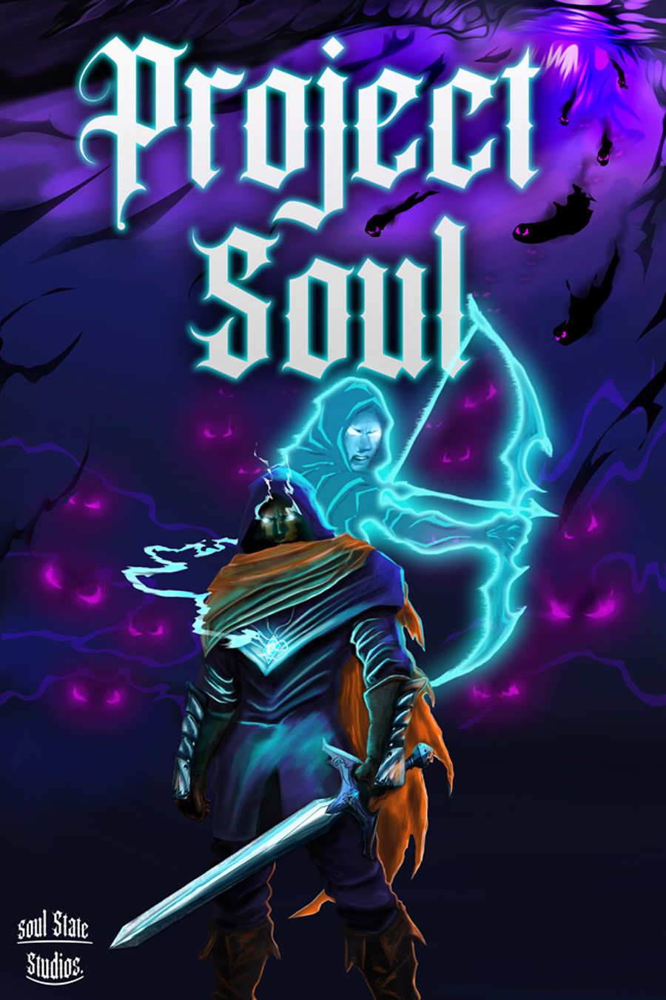
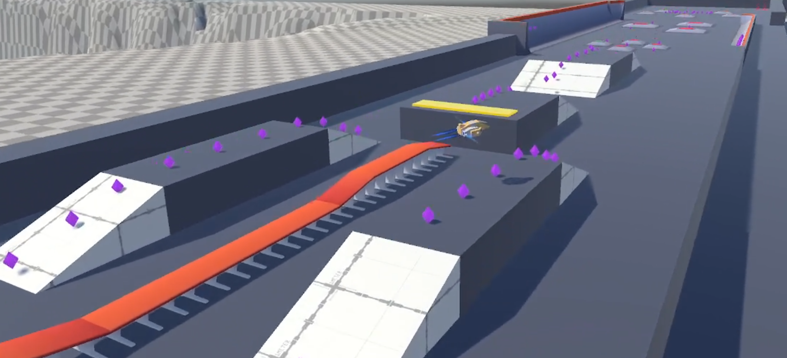
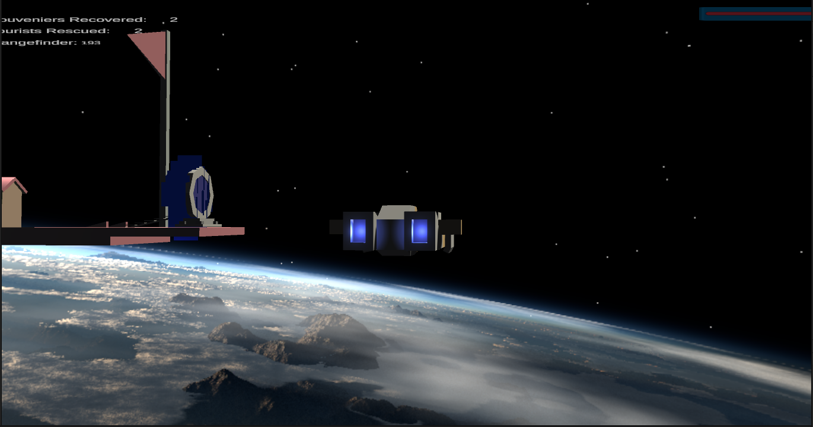
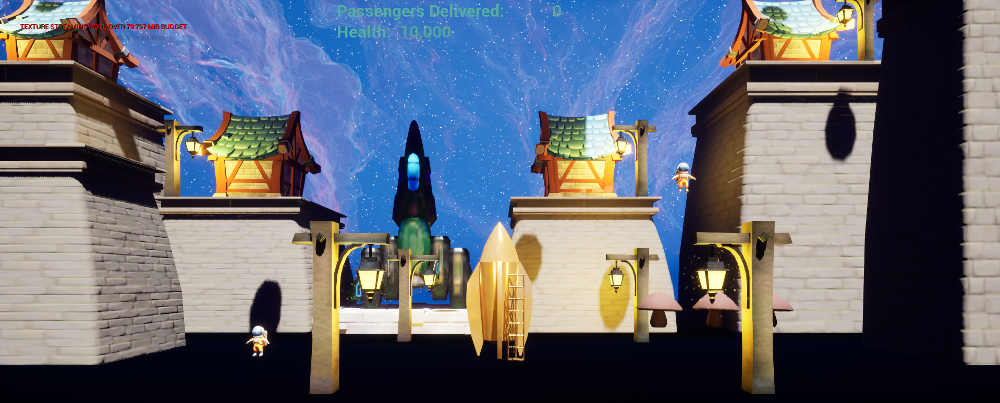

Jonathan
- Game Development Portfolio -
VIDEO
Project Soul

Toronto Film School Capstone Project - Winter 2025Roles: Contributions:
Click here for technical details about Project Soul
▼
Language/Engine:
Features:
Dialogue System
Node-based dialogue editor using ScriptableObjects
Pre/post node triggers
For giving or completing quests, providing quest rewards
Expandable for other in-game events
Conditional dialogue
Supported multiple conditions with AND / OR
Quest System
Utilized ScriptableObjects
Configurable number and type of quest objectives
Provided hooks for dialogue or other systems to verify quest status
TFS Release Announcement
Deep Space Speeder Park

A physics-based sci-fi vehicle sim set on an asteroid with a “skate park” for space speeders.
Language/Engine:
Notable Features:
Independent physics-based maneuvering thrusters, main engines, and brake thrusters
“Repulsor-like” suspension (similar to “Luke’s land speeder”)
Particle physics-based “elevator”
Space Mini Golf Death Trench

A physics-based adventure atop weaponized space mini golf platforms.
Designed as an action shooter for players to pilot and fight their way through oversized and hostile space mini golf courses.
Language/Engine:
Notable Features:
Physics based controller
Dotween Library for scripted obstacle movement
Rocket Ship Valet

An unusual take on the standard lunar lander assignment
Collect and deliver passengers in the most unwieldy of spacecraft
Language/Engine:
Notable Features:
Physics based
Pick up passengers via tractor beam or just crash into them the old fashioned way
Avoid miniature black holes and springy space mushrooms
Game Jams
Cult of the Reaper
Fort Maple
April 2025 TFS Game Jam Winner
What Canadian Beaver doesn’t want to run their own Maple Syrup farm?
Commercial Projects
Pistol Whip 2089
A Blade Runner / Terminator inspired expansion for the award winning VR shooter Pistol Whip
VIDEO
Pistol Whip Styles
The Styles system was a major addition to Pistol Whips modifiers and leaderboards, allowing for potentially millions of modifier combinations each with their own custom leaderboards.
VIDEO
Pistol Whip Smoke & Thunder
A Wild Wild West inspired expansion for the award winning VR shooter Pistol Whip
VIDEO
Additional Courses
Udemy Courses
Intro to Flight Physics
The Beginners Guide to Games AI
Unity Dialogue & Quests: Intermediate (Course no longer available)
Learn to Create a Metroidvania Game
Unity Mobile Game Development
Galaga 3D
Pinball 3D
Ludo 3D